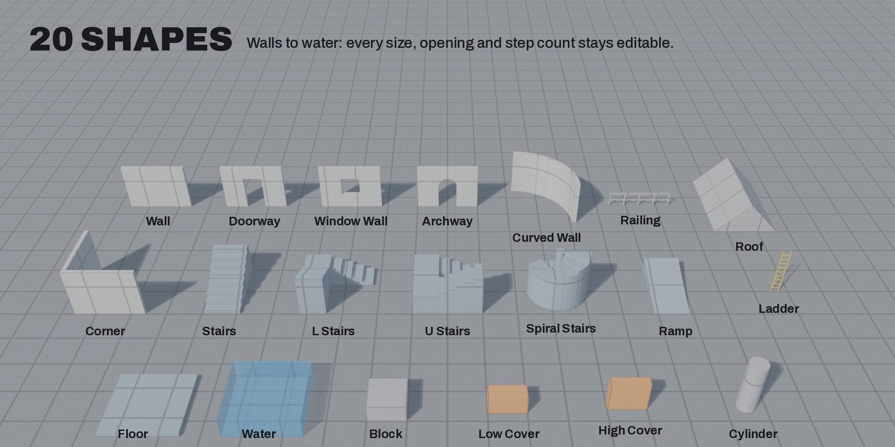
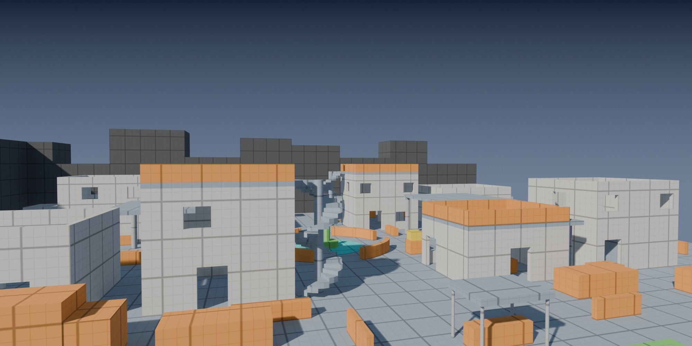

Block out game levels on the grid.
Blockd is a Blender add-on for level blockouts. Draw walls, floors, stairs and doorways, size them from your player's metrics, and export the meshes with collision to Unreal, Unity or Godot.
Keep in mind. Blockd makes blockout geometry: simple, measured meshes for testing a level in your engine. It needs Blender 4.2 LTS or later.
Draw
Twenty shapes, drawn on the grid or against a wall.
Drag, pull up, click
Drag a footprint, pull up the height and click. Shapes snap to the grid and to the corners of what is already in the scene.
Rooms and connected walls
Room draws a floor and four walls in one drag. Connected Walls draws joined walls from corner to corner and closes the corners for you.
On walls too
Ledges, pillars and facade pieces stand on the wall you draw them on, and you pull them out to the depth you want. Ladders and railings go on at their own thickness.

20 shapes
From walls, doorways and archways to spiral stairs, roofs, cover and water. Switch shapes with the number keys or Tab without leaving the tool.
Edit
Every piece keeps its parameters after you place it.
Resize in the viewport
Drag the arrows on any face to resize a shape, one grid cell at a time.
Change anything later
Change a wall's length, swap a door for a pointed arch, add steps. Hold Alt to change every selected piece at once.
Measure
Check the level against your player before it leaves Blender.
Step and jump gauges
Select a piece and a gauge beside it shows whether the player can step up onto it, jump up onto it, or neither.
- step up
- jump up
- out of reach
Sized from your player
Enter your player's height, step, jump and slope once. Check Metrics selects the doors, stairs, ramps and cover that don't fit, and the player capsules and rulers follow the same numbers.
Export
Meshes, collision, pivots and colors, ready for the engine.

Gameplay tags
Eleven tags, from walkable and cover to hazard and trigger, give each piece a gameplay meaning and a color. The colors carry into your engine.
Export with collision
Export FBX or glTF with presets for Unreal, Unity and Godot. Blockd writes UCX_ collision for Unreal and -col meshes for Godot, Unity builds its colliders on import, and the grid comes along as a texture.
Tested in Unity, Godot and Unreal
The demo level went into Unity 6 as one FBX: 322 meshes, 322 mesh colliders, with the tag colors and the grid kept. In Godot and Unreal, solid pieces import with their collision.
Also in Blockd
- Pivots on any of 27 points of a piece, or on the 3D cursor for a door hinge
- Live cutters that move with the piece they cut
- Extend, to tile walls and floors with copies placed side by side
- Bake to Static Mesh, and Mark as Kit Piece to add your pieces to the Asset Browser
- Dimension labels for the selected pieces in the viewport
In the download
- blockd-1.2.1.zip: the extension for Blender 4.2 LTS and later
- Blockd User Guide (PDF)
- Blockd Grid Kit: 32 ready-made grid pieces, including walls, floors, stairs, ramps and cover. Every piece stays editable with Blockd.
Installation
Blender 4.2 LTS to 5.3
macOS, Windows and Linux
In Blender, open Preferences > Get Extensions, choose Install from Disk and select blockd-1.2.1.zip. The User Guide has the details.
Block out your next level.
Draw it, measure it against your player, and test it in your engine.
Blockd is made by The Souk Galaxy.